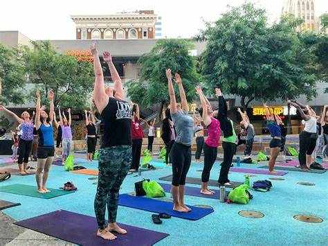

Are Fitness Events Effective?
Whether it’s a launch event or first-anniversary celebration, in-person events can do wonders for your brand.
When it comes to event marketing, 84% of attendees said they have a better understanding of the product, service, and company being promoted at the event.
Fitness events can bring people together and inspire them to make changes. Events allow gyms, studios, and health clubs to think of creative ways to engage with members and the local community.
Whether the aim is to boost membership sales, increase the sense of community, or engage current members, events can help you to meet your goal.
Events or experiences offer more than just a workout; they bring something new which members can’t usually get. If your fitness brand isn’t branching out with events and unique experiences yet,
you could be missing out on an excellent marketing opportunity.
Fitness Event and Experience Ideas
A large chunk of event attendees end up turning into paying customers. With the potential to boost sales and engagement, fitness events are a no-brainer. Events can take on a ton of different formats.
Depending on your budget and objective, you can organize an event that your members will love.

Challenges and Competitions
Challenges and competitions are a great way to build a sense of community. Perfect for boosting retention, fitness challenges can motivate your members to get moving and hit their goals.
It’s a good idea to have different categories that are suitable for multiple fitness levels. Ideas for fitness challenges include total calories burned, most club visits, healthy eating challenges, and overall weight loss.

Workshops, Seminars, and Courses
Educational events and experiences allow you to pos`ition your brand as a health and fitness expert. You have the option to host a workshop in-house, in a different location, or produce online educational courses.
Host seminars to encourage your local community to drop by like healthy family cooking or stress management. Make sure to get all attendees’ information so you can market to them after.
Retreats and Holidays
Wellness tourism is projected to grow nearly 50% faster than overall global tourism. Health, fitness, and wellness travel have massive potential for your business. Organize a week-long yoga vacation or a weekend retreat away from the bustle of city life.
Health-orientated holidays are a fantastic way to boost income, support your members’ goals, and increase engagement. This also gives you the opportunity to partner with local businesses such as nutritionists, spas, and local chefs.
Celebration and Launch Evnets
Another critical area for fitness events is celebration and launch events. Whether you’ve recently opened a new location or renovated your gym, it’s an excellent time for an event. During a launch event, invite local press and encourage social media use throughout the event.
People love to sample new products, food, and services. It’s a fantastic opportunity to spread the word and raise awareness. If you would like to organize a fitness event, we’ve pulled together 14 first-class event ideas to boost retention and acquisition.
11 Steps to plan and Organize a Fitness Event
It makes sense that a successful event takes time and planning. When organizing a fitness event, multiple factors need to be considered from invitations and budget to logistics and location. Event planning is a task in itself. Here’s a breakdown of the steps you need to take to plan and organize a fitness event.
Set Your Goals for the Event
Before you start organizing the event, set your goals. The function can have more than one focal point, but you should have goals in mind that you want to achieve. This will help navigate the planning process. Consider both objectives for your members as well as business goals. So, you may want to increase membership sales but also educate the community on things like fitness and nutrition.
Start by speaking to your members. You want to plan an event that will land well with the community and be a success. What better place to start than getting feedback before you even begin? Ask questions to find out the type of events they would most like to see from you. If they struggle to eat healthily out of the gym, then a cooking event that teaches a few healthy recipes would be very beneficial for your members.
At the same time, these sorts of experiences and events can do wonders for engagement and retention.
Determine Your Budget
Your budget is a pretty big factor in the event planning process. After all, it dictates what you can and can’t afford to do. You will need to cover any extra time your employees need to take to organize and attend the event. Think about event marketing, and any freebies you want to give away to attendees. Whether it’s a branded t-shirt or class passes, you need to think about event funding.
If it’s a paid event, do the ticket sales result in a profit? You don’t want to be losing money. Think about sponsorship from local businesses that complement the event. You may want to team up with a local smoothie bar. The event provides the partnering business with advertising and foot traffic while your attendees get to enjoy smoothies. If you’re holding a fitness event in-house like a fitness challenge, the costs are meager in comparison to say a fitness retreat.
Choose the Location
When it comes to location, you have various options. You can decide to host the event in-house, which is ideal for things like challenges, competitions, and seminars if you have space. If you want to take the event outside, you can use local parks for events like an outdoor obstacle course or group picnic. The location you choose is dependent on the type of event you’re planning. Of course, if you want to organize a fitness retreat, you will have to find a location that accommodates this and provides everything you need.
Make a Checklist
Once you’ve chosen the type of event, determined your budget and location, you now need to pull the whole thing together. Gather your events team and make a thorough checklist. This should include everything you need to carry out before, during, and after the event. The list will also include items that you need to get from gifts for attendees to marketing collateral.
Although this may sound like an obvious part of event planning, it’s easy to get excited and get ahead of yourself. Your checklist should navigate your planning process and keep you on track. Lists help to keep you accountable and know precisely where you are with event planning. Share the checklist with your team and make sure it’s updated regularly.
Set a Realistic Timeline
Your timeline will be dependent on the type of event your hosting. While something like a weight loss challenge may take less time to prepare than a fitness workshop, you still need to set a realistic timeline no matter the event. Your marketing strategy and budget will be tied to a timeline which you will need to stick to.
If you can, give yourself at least three months to prepare for an event. If you’re collaborating with other businesses, everyone involved needs enough time to bring everything together. When you’re strapped for time, you often rush into things and make snap decisions. This can really affect how successful an event will be.
Plan Marketing Strategies
Your event marketing strategy will play a significant role in spreading the word and getting people through the door. It doesn’t matter if you’re throwing a massive launch event or a monthly fitness competition, you should still create a marketing strategy.
You need to inform your community and people outside of your gym that your event is taking place. Tell them why they should go to your event. Think about using Facebook ads, word-of-mouth marketing, email, and push notifications to share the news.
Event Insurance Coverage
Make sure to check your insurance coverage for events. If you’re holding a seminar out of your usual opening hours with 30+ guests, are you still covered by your insurance? This is something you need to check early on as it could dictate the type of event you can throw on your premises.
Whether you’re holding an event in-house or at another location, check if you need extra insurance to cover you. Think about public liability insurance for your event. If your event involves physical activity, you need to be covered for any accidents or injuries that may occur.
Manage Logistics
There’s a lot going on before, during, and after an event that needs to be taken care of. Manage the logistics so that there are no issues on the day. Consider parking arrangements, check-in, or registration on the day, and make sure your studio is large enough to handle the number of people. If you have a large number of people attending, think about the plan for entry and exit to avoid any chaos on-site during the day.
Remember to arrange social media coverage during the event. Facebook Live and Instagram Stories are a great place to start to showcase your live event coverage. Your event social media strategy will be apart of your marketing strategy.
Tickets and Invitations
How will you invite guests? Is it a paid event or free for all to come? These are elements you will have to consider when organizing your event. If it’s a members-only event, you can send out personalized invitations via email to all guests.
Give your guests plenty of notice so that they can make arrangements ahead of time. If you’re holding an open-day style event and trying to encourage new member sign-ups, you’re more reliant on your marketing reaching the right people. Set up open Facebook events so you can get an idea of the number of guests attending.
Send a Reminder
You probably sent out tickets and invitations a month or so before the event. Send out a reminder to all guests so that your event is fresh in their minds. You may want to send a friendly reminder a week or so before then again the day before. This may be in the form of a text, email, or push notification.
Remember to include any special instructions, parking, or directions in the reminder email the day before the event. This will help reduce any confusion on the day and hopefully result in a very successful and organized event.
Enjoy and Have Fun!
Don’t forget to enjoy yourself and have fun. Event planning can be time-consuming and laborious work, but it doesn’t come without its rewards. Events are ideal for boosting engagement, retention, and acquisition. Not to mention the benefits it can give to your members. A weight-loss challenge could be just what your members need to hit their fitness goals.
It’s a good idea to ask for feedback after every event. No matter how successful they are, you can always learn and evolve. Try sending out quick feedback forms to all guests the day after. You want to find out if guests enjoyed their time if they would come again, and what would make them love it more.
In Summary
Fitness events can be marketing magnets. These days, experience is everything. People are looking for more engagement, community, and interaction. With the right planning and organization, you can host an event that your members and community will love. All the while, increasing brand awareness, member engagement, and membership sales.